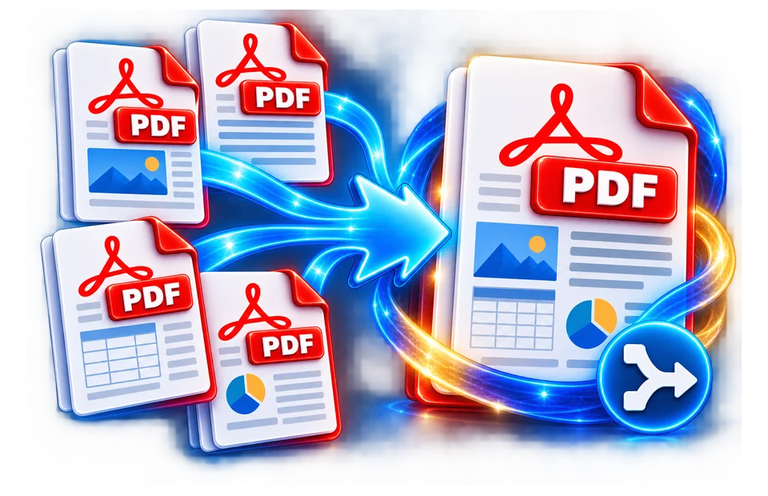

01
Add documents
Use DoKitly to merge PDF files when several documents need to become one continuous PDF. Add multiple files, arrange them in the order you want and process the final document in your browser. The…
Combine multiple PDF files into one document.
Use DoKitly to merge PDF files when several documents need to become one continuous PDF. Add multiple files, arrange them in the order you want and process the final document in your browser. The order matters: pages are appended file by file, so a cover letter, form, supporting evidence and appendix should be arranged before you create the merged copy. The tool is useful for submissions, reports, study notes and document bundles without requiring desktop software. The merge does not rewrite the meaning of the source documents; it simply creates a new ordered container for their pages.

Use DoKitly to merge PDF files when several documents need to become one continuous PDF. Add multiple files, arrange them in the order you want and process the final document in your browser. The…
Merging three PDF files in the order Cover, Report and Appendix should produce a file whose first page is the cover and whose final pages contain the appendix. Do not assume upload order equals…
Merging three PDF files in the order Cover, Report and Appendix should produce a file whose first page is the cover and whose final pages contain the appendix. Do not assume upload order equals…
Merging three PDF files in the order Cover, Report and Appendix should produce a file whose first page is the cover and whose final pages contain the appendix. Do not assume upload order equals intended reading order if…
Use the real tool above to verify the result. The example illustrates the workflow, not a guaranteed outcome.
The practical limit depends on total file size and available browser memory rather than a fixed number.
Yes. Arrange the selected PDFs in the order you want before processing.
A normal merge combines existing PDF pages; it is not intended to recompress page content.
Yes, although large multi-file jobs may work better on devices with more available memory.
The source may be damaged, encrypted, unsupported by the PDF library, or too large for available browser memory.
Use the Reorder PDF Pages tool when you need page-level rearrangement inside a PDF.

A combined PDF should read logically. Decide whether a cover page, application, supporting documents and attachments belong in a specific order.
Choose the source PDFs, review their order in the tool and create the merged document. The final PDF should follow your intended sequence, not an accidental filename sort.
Combine a proposal, pricing sheet and portfolio into one file. Then open it and confirm the proposal appears first, prices follow and portfolio pages are complete.
Merging does not automatically correct errors already inside each document. It also does not guarantee that bookmarks, forms or digital signatures behave exactly as they did in separate files.
Verify page count, orientation, sensitive pages and file size. Keep the original PDFs, especially if the documents have signatures or compliance requirements.